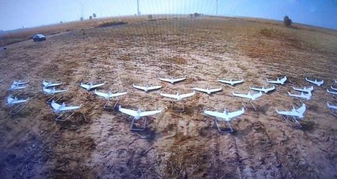
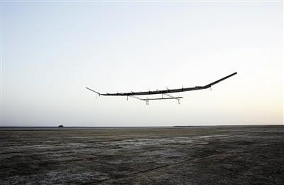
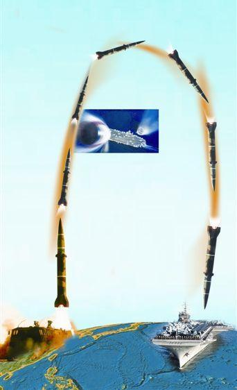
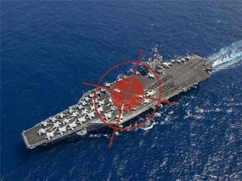
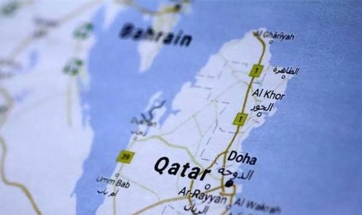
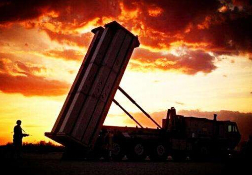
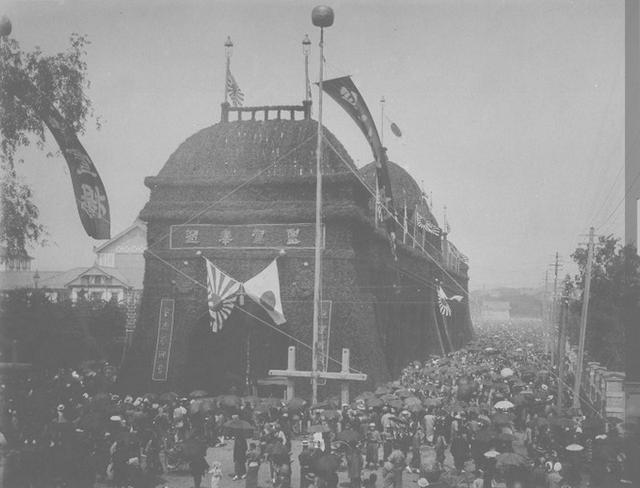

中国又创新记录!119架无人机"群飞"完爆美国

【环球网军事6月12日报道 环球时报特约记者 魏云峰 环球时报记者 马俊】中国再次创造固定翼无人机集群飞行的纪录——119架!在短短两年内，中美四次刷新无人机集群飞行的规模，在该领域的竞争日趋激烈。中国空军专家傅前哨11日对《环球时报》记者表示，固定翼无人机的集群飞行能力，代表着未来无人机应用的重要方向，也是智能无人系统“改变游戏规则”的体现。 固定翼无人机集群飞行更难 据报道，中国电子科技集团公司(中国电科)10日宣布，成功完成119架固定翼无人机集群飞行试验，刷新此前2016年珠海航展披露的67架固定翼无人机集群试验纪录，标志着智能无人集群领域的又一突破，奠定了我国在该领域的领先地位。试验中，119架小型固定翼无人机成功演示了密集弹射起飞、空中集结、多目标分组、编队合围、集群行动等动作。 傅前哨介绍说，与这几年春晚上惊艳亮相的四旋翼无人机集群相比，固定翼无人机光是编队飞行的难度就高得多。因为四旋翼无人机可以在空中悬停，更容易精确定位和编写控制程序。理论上讲，只需要预先制定好每架无人机的飞行路线，它们就可以按照程序在空中组队飞行，但其实相互之间没有联系。固定翼无人机的编队飞行就困难很多。因为固定翼无人机必须保持一定的速度才能维持在空中飞行，每架无人机不仅需要知道自己在哪里，而且还得知道附近其他无人机的位置和方向，并根据情况调整方向，以避免发生“空中撞机”事故。这就意味着固定翼无人机必须有“相互沟通”能力，对它们的传感器、通信、定位等技术提出了极高要求。 也正因为固定翼无人机编队飞行不易，因此今年3月巴基斯坦阅兵式上的“飞马”无人机(经中国授权生产的“彩虹-3”无人机)三机编队飞过主席台才让世界瞩目——这是全球第一次无人机以编队飞行的方式参加阅兵。 中美在无人机领域竞争激烈 傅前哨认为，在无人机集群的控制技术领域，中美走在世界最前列。美国致力于打造无人机集群，通过国防高级研究计划局(DARPA)、海军研究局和众多实验室等组织机构，在无人机集群的概念验证研究方面成效显著。美国国防部发布的《无人机系统路线图 2005—2030》将无人机自主控制等级分为1-10级，确立“全自主集群”是无人机自主控制的最高等级，预计2025年后无人机将具备全自主集群能力。 2015年，美国海军实现50架固定翼无人机集群飞行的纪录。这些无人机按照主从模式飞行，利用无线自组织网络进行信息交互和共享。与以往每架飞机需要一个操作员不同，该项目通过集群地面控制站实现了同时对50架无人机的控制，将控制权逐渐转移至飞行器，使无人机实现自主飞行和决策，以减轻操控人员的压力。2016年11月，中国第一个固定翼无人机集群飞行试验以67架飞机的数量打破了美国的纪录。今年1月，美军使用三架战斗机在空中释放了103架“山鹑”微型侦察无人机，可连续飞行半小时之久，能自主执行情报搜集和监控任务。但不到半年时间，这个纪录再次被中国改写。 “像智慧生物那样自主决策” 中国电科智能无人系统专家赵彦杰表示，自1917年无人机作为一种新装备问世以来，100年后的今天，智能无人集群再一次成为“改变游戏规则”的颠覆性力量，以集群替代机动、数量提升能力、成本创造优势的方式，重新定义着未来力量运用的形态。 “集群智能”一直被各国视作无人系统人工智能的核心，是未来智能无人系统的突破口。傅前哨表示，无人机集群真正要实用化，面对的问题不只是编队飞行，还需要根据不同情况像智慧生物那样自主做出判断和决策。例如无人机集群控制的基础是协同态势感知，它们配备有不同的传感器，需要通过相互协同工作，实现信息共享，从而获得更大的感知范围和更高的精度。 在编队飞行中，无人机集群还需要根据情况变换队形，例如遇到障碍物时整个编队的分离与重新融合，编队成员增加或减少时的队形调整，以及作战目标改变、威胁环境变化等其他突发情况下的编队重构等。当无人机集群面对高对抗性的战场环境，它们还需要自主判断如何以尽可能少的损失确保任务的完成率，使无人机集群在执行任务时的生存概率和作战效能达到最佳。 据介绍，大规模、低成本、多功能的无人机集群通过空中组网、自主控制、群智决策，可以应用于多种探测感知、应急通信等任务。傅前哨说，例如这类无人机集群实施对地攻击时，就将对地面防空系统构成全新挑战:个体目标太小难以跟踪，即便击落其中几架，也无法消除整个机群的威胁。未来智能无人集群还将呈现系统智能化、网络极大化、节点极小化、平台多样化、成本低廉化五大特点，并加速推进智能无人集群向装备系列化、应用多样化、覆盖全域化快速发展。
美国大感意外 中国找到击沉航母的新办法 这一武器十分出人意料

“ 彩虹-T4”型太阳能无人机试飞时的照片中国正继续加强对美国航母威慑的努力。无独有偶，中国也在相临时间宣布了可能成为其反介入/区域拒止战略关键系统的重大进展。据美国《国家利益》杂志网站10日发表《中国可能找到了击沉美航母的新法子》的文章称，上周，中国官方媒体报道该国大型太阳能无人机“彩虹-T4”首次在2万米高空飞行。这很重要，因为2万米高空无云，这意味着该太阳能无人机的飞行时间能大大增加。有美国军事专家指出，“彩虹-T4”能在6.5万英尺的高度巡航，所以不用飞行太远就能覆盖大片地域。无论对军方还是科技公司来说，覆盖如此广阔的地域都使它成为出色的数据中继和通信节点。中国更重视的是为飞行的反舰导弹提供目标的实时信息所需的监视、雷达和通信系统组成的先进“杀伤链”，“彩虹-T4”就是这条“杀伤链”中如今最新的一条。有了“彩虹-T4”，中国所谓的“航母杀手”导弹东风-21D就能成为中国在西太平洋对付美国航母的杀手锏。

中国东风-21D反舰弹道导弹打航母的设想图 之前中国对于近期试飞的太阳能飞机并没有提到名字和型号，但是美国报道直接提出了其正式名称——“彩虹-T4”，显然这其中的“T”字就是指太阳能飞机。据国内权威资料介绍，“彩虹-T4”型太阳能无人机翼展达45米、升限超过20000米，留空时间大于24小时，载荷能力20公斤，可在指定地域高空持久飞行，支撑通信中继、侦察监视、移动通信、导航或视频广播服务等任务应用。据称，该机未来的升级型号，将在留空间和载荷上做文章，主要就是可使用新型蓄电池并提供夜间持续飞行能力，并在结构和翼展上大幅改进，从而使其具备几十天或者数月的持续飞行能力。此次“彩虹-T4”型太阳能无人机的试验成功，标志着中国已成为继美、英之后第三个掌握该技术的国家。

无人机将比卫星更容易锁定航母的踪迹 对于中国“反介入/区域拒止”（A2/AD）战略的美国对付方法，就是设法打断为其提供信息支持的“杀伤链”中的一环，从而使整个链条失效。早前美国的设想就是，击落中国为东风-21D导弹或其他打击手段提供数据的中国海洋监视卫星和近地侦查卫星，当然还有名气较大的“翔龙”长航时无人侦察机以及空警-500预警机，从而让中国反舰弹道导弹失去眼镜成为瞎子。就美军的实力来看，做到上说这一切并不难，因此美军多次宣称，中国“反介入/区域拒止”（A2/AD）战略并不十分可怕，这也是近期美军航母多艘次在亚太地区耀武扬威的动力所在。尽管中国也有其它对付办法，也有能力保护自己的“杀伤链”的有效性，但“彩虹-T4”型太阳能无人机的问世让中国的自信更加明显。 中国反航母作战的部分手段就包括无人机 几乎可以确信，相比动辄上亿的卫星来说，“彩虹-T4”型太阳能无人机具有成本低、部署灵活等优势，可与高空巨型情报预警飞艇配合，以固定平台与机动平台的高低搭配形式，形成区域全覆盖的不间断态势感知、通信和中继网络。再加上该机具备的超长飞行时间和高空停留能力，无疑为持久的数据中继和4G/5G通信提供了可靠的空中平台，能够部分替代通信卫星的功能。未来一旦发生战争，当中国的部分卫星被摧毁后，“彩虹-T4”型太阳能无人机将被大量部署到中国的海洋上空，它们将几乎无处不在的飞行在西太平洋大部分海域，与其他幸存的中国信息情报网络一道，共同为中国“反介入/区域拒止”（A2/AD）战略充当眼睛和耳朵，从而让这个“杀伤链”继续有效并让美军航母有来无回。
此小国三十万公民一万多兵，竟敢向周边大国叫嚣“开火”

卡塔尔是典型的阿拉伯国家，石油资源很丰富 卡塔尔是中东的阿拉伯国家之一，这个国家除了在南边和其他国家接壤外，这个国家的其余边界都被波斯湾包围。这个国家和邻国一样，在多岩石的沙漠当中藏着大量的石油和天然气，这个国家的财政收入大部分来自于对外出口石油，大概占了百分之八十。所以这个国家的国防最先考虑的问题就是，这个国家国内石油生产设施和海上航线的安全。而且曾经的两伊战争直接影响到这个国家的战略防御。 其实从中东的地区局势图来看，这个国家就是一个弹丸小国。但是这个国家的军事实力还是比较强大的。这个国家的武装部队的兵役采取的是自愿兵役，这个国家的军队有一半的士兵不是本国人，大多数是阿拉伯人、巴基斯坦人，作战的时候，这个国家有希望召集十万士兵。这个国家的士兵有一半不是本国人的原因是这个国家和沙特阿拉伯结成的联盟、这个国家在海湾合作委员会中的身份、这个国家对西方所具有的的战略价值，使得这个国家有很多外军部队。 卡塔尔只有三十多万人公民，现役义务兵就有一万多人 要说这个国家的人口也不是特别多，只有两百多万人，而且只有三十多万人是本国公民，剩下的人全是外籍人员。这个国家的现役义务兵有一万多人，除了这个以外，这个国家还有一支两千五百人左右的国家警察部队，主要负责边境安全和海岸线警卫。虽然这个国家的兵不多，但是这个国家的军事实力还是比较强大的，这个国家一直很重视军事采购，因为这个国家的经济实力强大，所以这个国家配备了很多法国、美国等生产的武器。和这个国家的兵力想必，这个国家的武器已经很先进了，但是这个国家并不满足。 在三年前，这个国家又花了两百多亿美元收购武器，包括波音E737预警机、"阿帕奇卫士"装备进犯直升机、"爱国者"PAC-3型防空导弹系统、"标枪"反坦克导弹等，所有的武器满足了海陆空三军各方面的需要。 卡塔尔军事实力比较强大，外交上比较强势 不难看出，这个国家的军事实力还是比较强大的，但是和一些中东强国相比较，还是有一定的差距，但是对于外交，这个国家十分强势。最近有媒体报道说，这个国家的国防部表态，如果阿联酋、沙特以及巴林的海军军舰进入其领海，那么就会开火。但是美国也有媒体报道说，这个国家国内的军事活动正在增加，这个国家已经在最高级别戒备状态。 想必这和之前的断交风波有很大关系，看来其影响已经越来越严重了，但是这个国家只是中东的一个小国。而且在很多人的印象当中，只记得这个国家钱多和足球，几乎没有人注意这个国家的军事实力。但是值得一提的是，这个国家虽然敢向这些大国“开火”，但是这个国家的军事实力还是比不上中东强国，从现在的情况来看，这个国家之所以如此强势，不过是为了解决外交困境，这只是一种策略罢了。相信在不久之后，在有关国家的调解之下，这个国家的外交问题会解决。
普京对“萨德”发出最后警告

继韩国政府宣布进行大规模环境评估之后，星州“萨德”又被曝“电力供应不足，难以正常启动”。 有韩国媒体甚至直言不讳地表示，价值超过一万亿韩元(约合人民币60亿元)的战略防御体系——“萨德”，实际上正沦为“半吊子”武器。 “萨德”的X波段雷达最远可探测1800km外的导弹，并提供精确的交战情报。不过，X波段雷达想要100%发挥其性能，需要耗费巨大电量，因此，稳定的电力供应对于“萨德”而言必不可少。 不过，韩国报道称，驻韩美军目前只能用“萨德”自带的发电机临时供电，原因是星州基地尚不具备运行“萨德”高功率雷达的高压电力设施。 MBC电视台称，驻韩美军原本打算借用韩国电力公社的高压电，但由于“萨德”装备和相关设施的完善工作、被推迟到了大规模环境评估之后，这一计划恐怕也要泡汤。 噪音巨大的“萨德”自带发电机是紧急情况下才可使用的供电设备，它能用1.3Mw(兆瓦)的功率生产4160v(伏)的高压电，但启动一小时需要耗费340升航空燃油。 由于星州居民旷日持久的集会抗议，燃油车无法开进基地，驻韩美军不得不动用直升机运输燃油，甚至还为此向韩军“请求支援”。 普京认为，“即使朝鲜明天宣布将停止所有核试验和导弹计划，美国也会以其他某种借口来继续建设导弹防御系统，或是根本无需任何借口”。 他还强调，俄方的军事活动“都是应对区域局势被迫采取的措施”，因为美国的相关行动“破坏全球战略平衡”。 “普京在出席经济论坛这样的国际场合对美国在韩部署‘萨德’以及扩建其全球反导体系进行警告，足见俄强硬的反‘萨德’立场”，韩联社如是评论。 而普京近期就“萨德”问题的表态恐怖是最后的警告了，上月24日，他在克里姆林宫接见韩国总统特使宋永吉时表示，“萨德”无法防御朝鲜远程火炮，军事效用有限，单凭军事手段无法解决问题。 就在上个星期，文在寅向美方承诺不会取消部署“萨德”，青瓦台的最新宣布看不出与上述态度有重大区别，但是文在寅似乎在放慢部署“萨德”的速度，这种“放慢”和“不取消”很像是分别展示给中美两国看的。 围绕“萨德”问题，中国在战略上不会输。一是我们应当有能力通过军事部署压制“萨德”带来的挑战，二是韩国踩了红线就会有遭电击一般的痛，同中国打交道的这一逻辑被证明真实、有效。大国的麻烦总是一个接着一个，重要的是我们须能够应付它们。
甲午战争后 日本隆重迎接回国军人 看得心里很难受

甲午一战，日本意外胜利。狂喜。狂庆。狂庆狂庆狂狂庆。之所以说意外，自是因为当年清朝海军，乃是亚洲第一，日本只能居于次席。尽管清朝已被列强虐了很多遍，但日本对于能否搞定这个巨无霸，还是没有把握。当时的外相陸奥宗光说了句话—— 我国人民在平壤、黄海战役胜利之前，对最后的胜败都暗自有所焦虑——最后竟然把上千年来的老大打败了，日本人能不在惊异之后，欢声雷动，沾沾自喜吗？图里的这几个大棚子，就是东京的商人捐资搭建的。看到国人如此喜出望外，陸奥宗光竟然担心起来。 他说，凯歌之声，到处可闻；骄傲自满的情绪，不觉流露出来。 对于未来的欲望日益增长……全国民众，只知 进攻 进攻。其余的都听不进去了。 他还说，如果有人因为看得远而觉得此刻的狂热是不正常的，想提出中庸稳健的主张，必然会被视为毫无爱国之心、卑怯胆小之徒。将为社会所不齿，势不能不忍气吞声、闭门蜇居。 两年后，陸奥宗光死了。他的预言却成真了。 日本人在不断胜利中冲向一个巨大的失败，吃过两颗原子弹后，终于清醒了一点——自明治维新开始，他们征服世界的迷梦，做了八十年。 回到1895年，日本人在被美国打开国门四十二年后，终于通过击败清朝而扬眉吐气，觉得自己是列强之一了。他们先辈的理想，终于实现了。 看着日本人为迎接军人回国而做的这些隆重准备，心里真不是滋味。但，历史之重要性，即在于它为后世提供思考。日本明治维新为何成功？清朝洋务运动为何失败？二战之后，日本为何又能快速崛起？ 如果我们看完历史，只是愤愤地骂几句，则当年牺牲的英雄们在天有灵，也会觉得我们浅薄。潜心研究敌人，搞透他们哪里做得好，吸取他们的经验与教训，才是自己强盛之道。